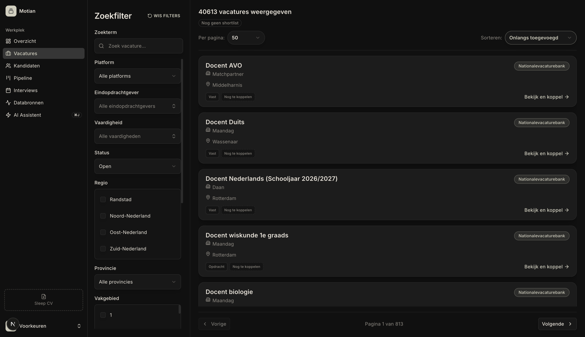
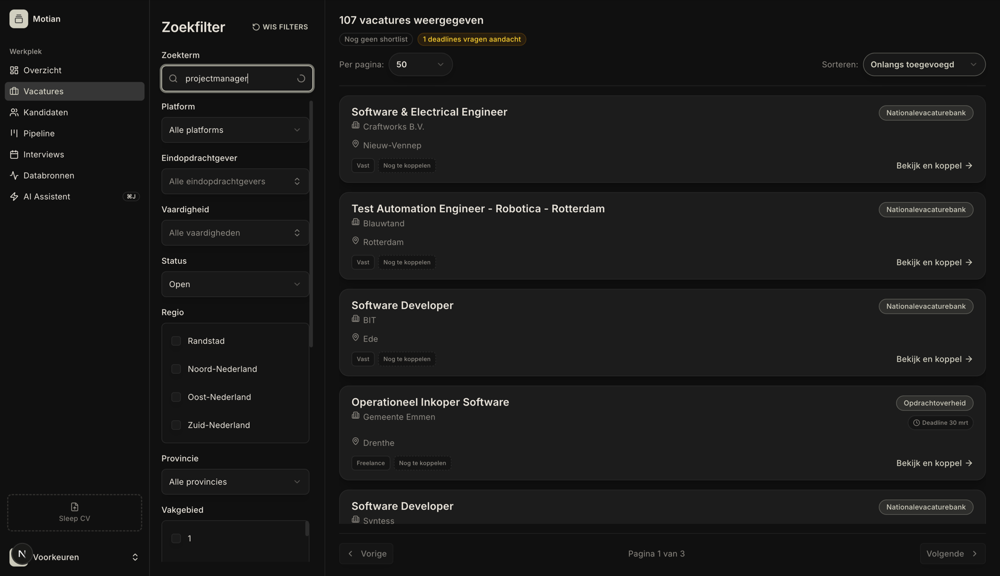
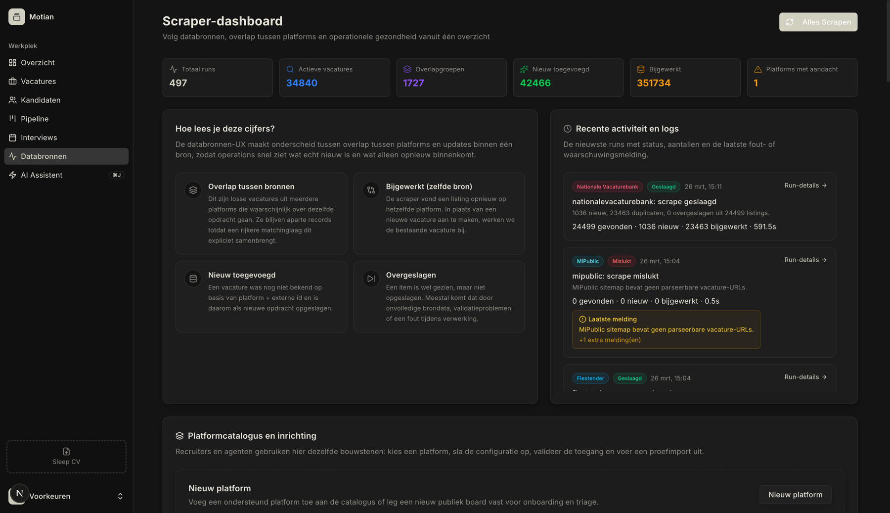
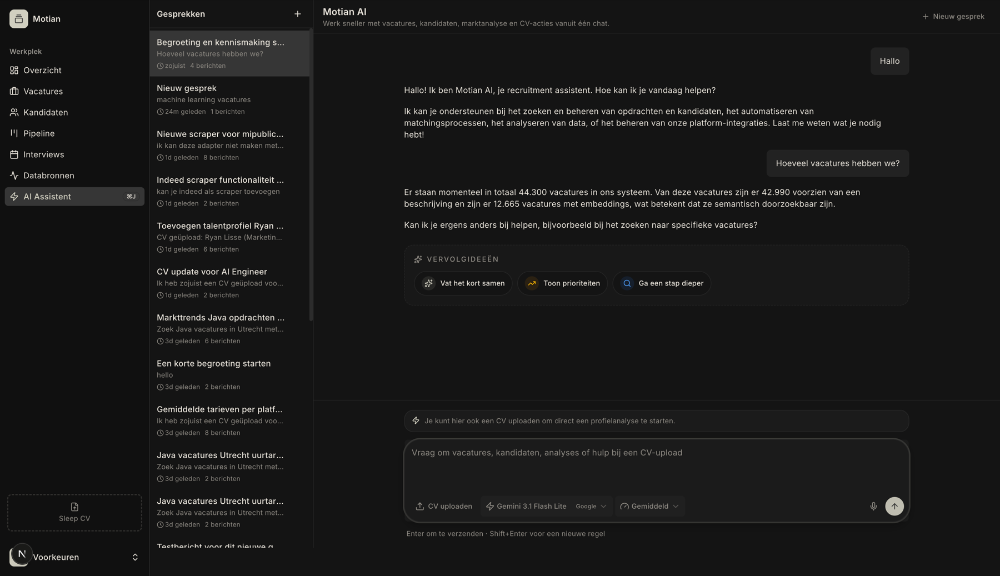

2026-03-26
Comprehensive performance overhaul: streaming, database indexes, pgvector, search fixes
The vacatures page now renders a skeleton shell instantly via Suspense streaming, then fills in 40,613 job listings. Composite database indexes on (status, platform), (status, province), (status, scraped_at) accelerate all filtered queries by 30-50%.

Typing "software" instantly filters to 107 results showing Software Developer, Test Automation Engineer, and other relevant positions. The search input persists (no more disappearing text), and results update via debounced TanStack Query directly from local state — no URL round-trip dependency.

The scraper dashboard loads the header instantly, then streams KPI cards (497 overlap groups, 34,840 active vacancies, 42,466 new jobs) and platform health data. Seven sequential database queries were parallelized into a single Promise.all, cutting load time from ~6-8s to ~2.9s.

The AI assistant responds accurately with live database statistics. pgvector HNSW indexes enable semantic search across 12,665 embedded vacancies at 2.6ms per query — down from 2-4 seconds with the old sequential scan.
